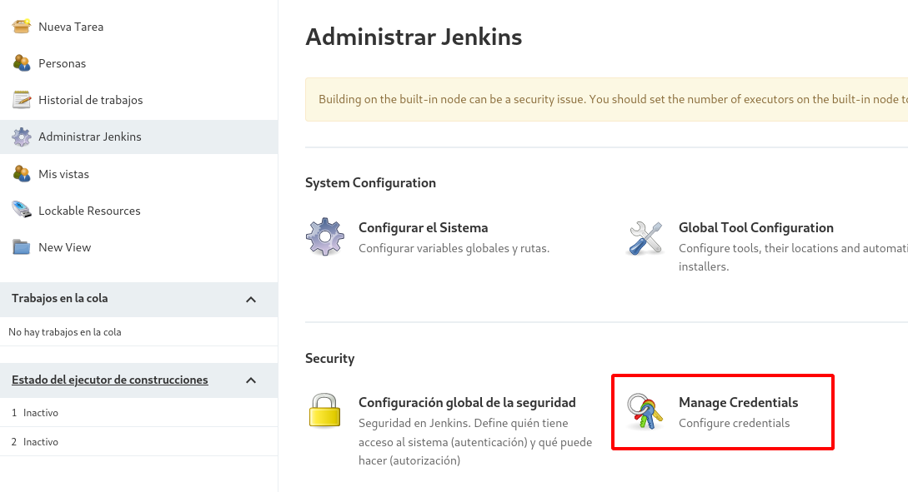
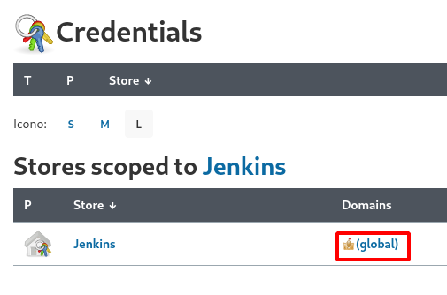
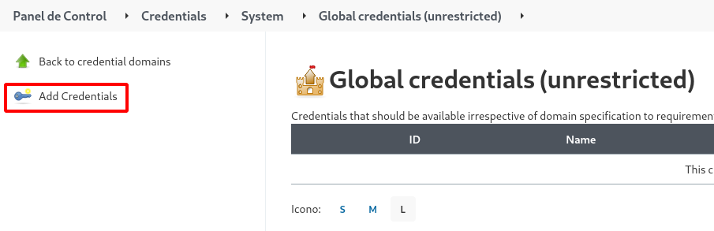
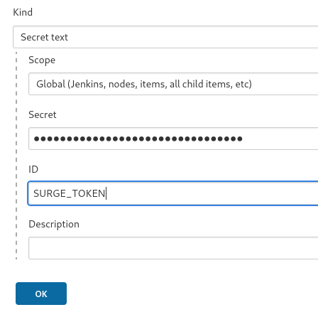

Taller 2: Comprobación de HTML5 válido y despliegue en surge.sh (test y deploy)
En este ejercicio queremos desplegar una página HTML5 en el servicio surge.sh, además queremos comprobar si el código HTML5 es válido. Estas dos operaciones: comprobar si el HTML5 es válido (test) y el despliegue en surge.sh (deploy) lo vamos a hacer con Jenkins de forma automática (IC y DC). Recuerda que el repositorio es https://github.com/josedom24/ic-html5.
Como vimos en el ejemplo 2, para hacer el despliegue necesitamos guardar el token que hemos obtenido de surge para que nos autentifiquemos. veamos como trabajar con credenciales en Jenkins.
Crear credenciales
Podemos crear varios tipos de credenciales: usuario y contraseña, credenciales ssh,… Nosotros vamos a crear un Secret text para guardar el token de surge.
Para crear la credencial:




Creación del pipeline
En el repositorio puedes encontrar el fichero Jenkinsfile con el siguiente contenido:
pipeline {
environment {
TOKEN = credentials('SURGE_TOKEN')
}
agent {
docker { image 'josedom24/debian-npm'
args '-u root:root'
}
}
stages {
stage('Clone') {
steps {
git branch:'master',url:'https://github.com/josedom24/ic-travis-html5.git'
}
}
stage('Install surge')
{
steps {
sh 'npm install -g surge'
}
}
stage('Deploy')
{
steps{
sh 'surge ./_build/ josedom24.surge.sh --token $TOKEN'
}
}
}
}
- En el apartado
environmentleo una variable de entorno a a partir de la credencial que habíamos creado. - Uso la imagen
josedom24/debian-npm, imagen que yo he generado de unadebianconnpminstalado. De esta manera no necesito instalarnpmque es un proceso lento. - Clono el repositorio.
- Instalo
surge. En realidad podría haberlo instalado en la imagen que he generado. - En el stage
Deployhago el despliegue.
Disparador del pipeline
¿Podríamos activar el pipeline cuando hagamos un push al repositorio? La respuesta es sí, tendríamos que escoger como Build Trigger la opción GitHub hook trigger for GITScm polling.
A continuación tendríamos que crear un Webhook en tu repositorio de gitHub. Los webhooks ofrecen una manera de enviar las notificaciones a un servidor web externo siempre que ciertas acciones ocurran en un repositorio o una organización.
Para más información: Triggering a Jenkins build on push using GitHub webhooks.
Tenemos un problema: al crear el webhook debemos indicar la dirección de nuestro jenkins, que tiene que ser accesible desde internet, pero nuestra instalación es local. Para hacer una prueba en nuestro servidor de jenkins local podríamos hacer uso de ngrok.
- La URL del tu repositorio GitHub.
- El contenido de la tu fichero
Jenkinfile. - Captura de pantalla donde se vea donde has creado las credenciales necesarias.
- Explica la configuración necesaria y una prueba de funcionamiento para que se dispare el pipeline cuando hagamos un push al repositorio.